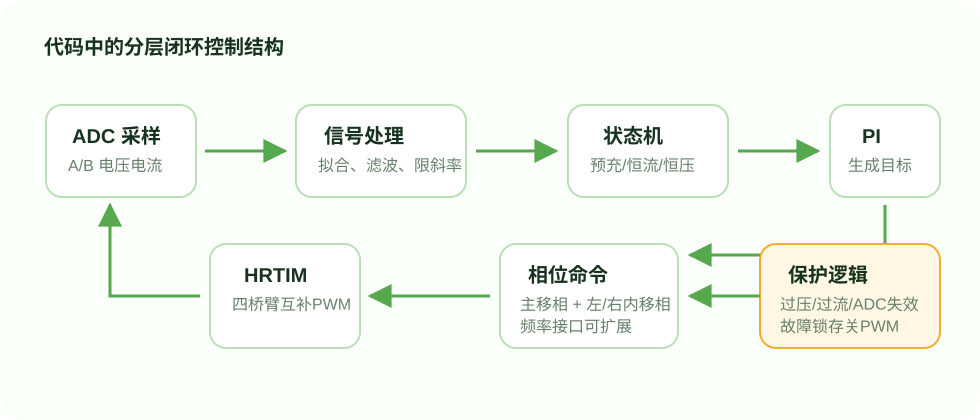

ADC1/2/3/4 分别采 A 电流、A 电压、B 电流、B 电压。
Control
分层控制策略
我最后没有把控制写成“电压误差直接改移相”。更稳的做法是先判断充电阶段，再让电流环和电压外环慢慢生成相位命令。

钳位、MATLAB 拟合、限斜率、低通滤波，得到稳定物理量。
根据电压区间进入预充、恒流、恒压、双向切换或故障状态。
生成主移相和两侧内移相命令，交给 HRTIM 输出互补 PWM。
为什么要分层
如果把电压误差直接变成相位大步变化，低压大电流侧容易出现突变。分层之后，电压外环只慢慢生成电流目标，电流环再调相位，状态机负责决定当前是否应该预充、恒流、恒压或保护。
Modes
三个 TPS 状态机
工程把三类题目工况拆成独立模块，便于分别调试，也避免一个状态机里塞入过多方向判断。
TPS_0 基本要求
B 侧 0.5A 预充，中段 0.5A-3A 恒流，接近 4.2V 后转恒压。主移相初值偏向 A 到 B 的功率方向。
TPS_1 发挥一
B 侧供能给 A 侧充电，A 侧 0.1A 预充、0.1A-1A 恒流和 15V 恒压，并监测 BT2 有效性。
TPS_2 发挥二
根据 A 侧负载电压判断 BT2 充电或放电，方向包括空闲、给 BT2 充电、BT2 反向供能。
TPS0_4_2 寻优扫描
围绕 4.2V 锂电目标扫描相位点，记录最佳点，并通过 PC 电流输入与确认帧辅助调试。
Code Evidence
控制页面对应哪些代码证据
我希望这个网站不是“凭空讲控制”，所以把每个控制概念都指向一个工程模块。
采样与物理量
ADC_Signal_Process.*钳位、拟合、限斜率、低通，输出 A/B 电压电流。PWM 与相位
PWM_SR_DAB.*主移相、左右内移相、频率、故障关断和 HRTIM 输出。工况状态机
TPS_0 / TPS_1 / TPS_2基本要求、发挥一、发挥二分别独立处理。显示与交互
LCD_SR_DAB.* / KEY_mode.*显示端口状态、切换页面、调节目标和清故障。Protection
保护和稳定性关注点
项目展示页不应夸大实测结果，因此这里明确列出控制设计中已经体现的保护边界，以及后续仍应实测验证的内容。